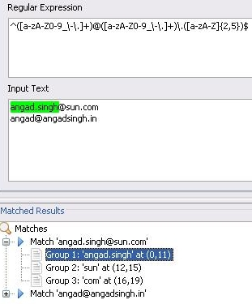

An Interview with Angad Singh, Grand Prize Winner of Sun India's
Code for Freedom Contest
Angad, Congratulations on your win! Please tell us a bit about your background.
I am a third-year undergraduate student pursuing a Bachelor's in
Information Technology at the Jaypee
Institute of Information Technology University, Noida, and also a Sun
Campus Ambassador. I'm a techie by nature and spend most of my time
learning and exploring new areas of computing. My interests include
web application development, computer vision and graphics, server
administration and robotics.
I believe in the power of community,
and as a Campus Ambassador I share my knowledge and skill of
open-source technologies with fellow students by conducting tech
talks, demos and workshops. My connection with Sun Microsystems has
been truly rewarding, and I blog
often about my activities.
You are one of three grand prize winners of Sun India's
Code for Freedom contest. Your project was a plugin created for the
NetBeans IDE! What does your plugin do?
My
NetBeans plugin: Regular Expression Plugin, or RegEx,
makes it simple to visually learn, build and test regular
expressions. It's an easy-to-use, all-in-one solution that helps
developers in all aspects of working with regular expressions.
A little background on regular expressions: Regular
expressions are a way to describe a set of strings based on
common characteristics shared by each string in the set. Regular
expressions are patterns that can be used to search, edit, or
manipulate text and data.
The plugin can be downloaded from the NetBeans Plugin Portal.
To
open the regular expressions plugin window in the NetBeans IDE, go to
Tools > Regular Expressions Plugin.
I also created a demo highlighting the features of the
plugin—showing how to build and test a regular expression for
checking email addresses. The screencast can be viewed on NetBeans.tv.
What are the main
features of your plugin?
Building a regular expression is as easy
as browsing the built-in
regular expressions language reference, double clicking on the
language elements to insert them into your regular expression. It also
allows you to search a regular expression pattern in the input text and
see the results in a tree view; to click on match results to see the
matched text highlighted. The plugin is very useful for new developers
and gets them up to speed quickly. More information about features of
the RegEx plugin can be found at the NetBeans Plugin Portal.
How long have you
been using the NetBeans IDE?
I have used NetBeans for a year since I shifted from Java Studio
Creator
2—the project got discontinued and the Visual Web editing features
got merged into the IDE as the Visual Web Pack. I started
using NetBeans for web-based projects in JSP. My favorite features are
the GUI Builder, the Profiler, the Visual Web and Mobility
Packs. Perhaps, the best feature of NetBeans (and not just the
IDE) is its ability to act as a platform for building Rich Client
Applications.
Is this your
first plugin for NetBeans?
Yes,
it is. A month before the Code for Freedom contest ended, my Sun
Club team and I had taken the initiative to offer support to aspiring
contestants, to help them make good plugin contributions. We held
regular meetings and brainstorming sessions where we offered guidance
for the inception of ideas, navigating contest guidelines, submitting
contributions and so on. I conducted hands-on workshops about the
features one could leverage while developing plugins for the NetBeans
IDE. I learnt and developed my first plugin along the way.
What inspired you
to create the RegEx Plugin?
I sought to develop this tool because one
didn't exist in the NetBeans IDE. I had checked out the NetBeans
Plugins Portal and NetBeans
contrib project page and discovered two plugins that dealt with
regular expressions but supported only some aspects of what I had in
mind. A more powerful tool was possible. I discussed the idea on the nbdev@netbeans.org
mailing list and received enthusiastic responses for the plugin and
suggestions for features it should have. Thus, I started and tried to
incorporate as many of the suggested features as possible.
What stood out
for you while developing the plugin?
That the true power of NetBeans lies in
a community that drives and supports it! Whenever I got stuck—for
example, not knowing how to use a specific API feature—help was
just a search away. NetBeans.org provides links to lots of useful
tips & tricks, tutorials and an extensive community-driven
documentation courtesy of the NetBeans
Wiki. If you cannot find the
solution on the web, you can post a query to mailing lists and rest
assured get a swift reply.
What advice do
you have to share with those creating a plugin for the first time for
the NetBeans IDE?
Documentation,
documentation, documentation. And the community. I made extensive use
of both while developing the RegEx Plugin. (See below for Angad's
recommended links.)
Articles, tutorials, blog entries, videos,
etc., are really very useful when working on
any Java-based project. A simple search can yield a lot of
relevant results, usually from Sun sites such as
developers.sun.com,
blog.sun.com,
java.net,
etc. Sun also provides extensive up-to-date documentation on all
API/SDK/Language features of all Java technology at docs.sun.com/app/docs.
Another
website I stay connected with is javaspecialists.eu.
Its newsletter is an excellent resource for any Java developer,
providing in depth information about specific topics and novel hacks
and tips & tricks not found anywhere else. It is run by Java
Champion Heinz Kabutz.
Javapassion.com is an excellent
resource. Sang Shin is a brilliant person and great teacher. The
training courses that he provides through his website
are very easy to understand; they focus on hands-on knowledge rather
than theory and are extremely useful for new learners and experts
alike. JavaLobby.com is another useful website providing news,
articles, tutorials, presentations and topics around interesting
topics for java programmers.
Lastly, when you encounter an
obstacle a solution may only be a forum or mailing list away.
Do you intend to
create more plugins for the NetBeans IDE?
Yes, I will definitely continue to work
on further extending the Regular Expression Plugin. I have submitted
a proposal about this to the NetBeans
Innovation Grants program and
await the results. And even apart from this plugin, as soon as a good
idea clicks, I'll go ahead and start working on it.
What was your
prize for the contest?
I received an Acer 4520 laptop as the
grand prize. I use it for my everyday work. I always wanted a laptop
and it just rocks! It helps with being much more productive. Thank
you Sun!
Congratulations again, Angad, and please keep us updated about
future plugin projects.
(April
2008)
Angad Singh's Suggested Links
Tutorials, Articles, Guides & Demos from NetBeans.org:
·NetBeans
Module Quick Start
·NetBeans
Modules and Rich-Client Applications Learning Trail
·Basic
things to know about NetBeans' architecture to get started
·Basic
Terms for NetBeans Rich Client Application Development
·Introducing
NetBeans plug-in Development
All my module development questions
were answered here:
·Module
Developer FAQs
·NetBeans
Certified
Engineering Course
·Contributing
Modules
Additional resources:
·Schliemannizing
Regular Expressions in NetBeans IDE
·Highlighting
Words in a JTextComponent (Java Developers Almanac Example)
·Swing:
Context Menu for TextComponents
·Automated
DOM Tree Tutorial
·Swing
- JTree with XML Content
·Adding
a Node to a JTree Component (Java Developers Almanac Example)
·Swing
Tutorial: JTree